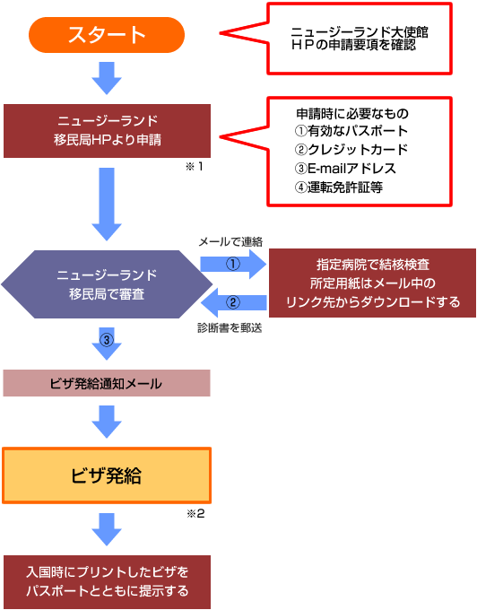

';
$header_obj->fncMenuHead_h1text = 'ワーキングホリデー協定国（ニュージーランド） | ワーホリビザ情報';
$header_obj->display_header();
include('../calendar_module/mod_event_horizontal.php');
?>
';
$header_obj->fncMenuHead_h1text = 'ワーキングホリデー協定国（ニュージーランド） | ワーホリビザ情報';
$header_obj->display_header();
include('../calendar_module/mod_event_horizontal.php');
?>

ニュージーランド国情報へ
ニュージーランドのワーキングホリデービザの取得方法についてご案内します。
在日韓国人の方のワーキング・ホリデービザ申請はこちら>>
ニュージーランドのおすすめ語学学校
ビザ取得までのステップチャート
参加可能年齢 18～30歳（申請時30歳であれば31歳での入国が可能）
ニュージーランドの場合、HP上からオンライン申請ができます。ビザ申請時に必要なものは有効なパスポート（期間１年６ヶ月以上）、クレジットカード、E-mailアドレス（携帯アドレスは不可）、運転免許証や健康保険証などの証明書です。
※１ ホームページ上にユーザー名とパスワードを設定してマイページを作成する必要があります。申請の手引きはNZ大使館のHPで確認して下さい。
※２ 移民局からビザ発給の通知メールが届くのでWEBのマイページから「ELECTRONIC VISA」をプリントアウトして下さい。
ニュージーランド大使館 ビザセクション
〒150-0047 東京都渋谷区神山町20-40
TEL03（3467）2270 （ 9：30am～12：00pm／月～金 ） FAX：03(3467)2278
外務省ＨＰで基本情報を確認しよう
健康診断が必要なこと、知っていましたか？

ビザについて
対象
日本国籍を持つ18才から30才の独身者または、子供を同伴しない既婚者。休暇を過ごす目的で、ニュージーランドに1年までの長期滞在を希望される方。健康な方で、かつ犯罪歴の無い方。
滞在可能期間
ニュージーランドに最初に入国した日より、１２ヶ月の滞在許可が入国時に許可されます。途中でニュージーランドを離れた場合、離れていた期間を再入国後に 延長することはできません。（ニュージーランド国内でワーキングホリデーを取得した場合、すでにニュージーランドにいるため、発行された日から１年までの 滞在となります。）
●ワーキング・ホリデー3ヶ月延長●
ワーキング・ホリデー期間をさらに3ヶ月延長できるようになりましたが、条件があります。
就学
ワーキング・ホリデービザで、学校(語学学校等)に通えるのは6ヶ月（コースは複数可）までです。
仕事
ワーキング・ホリデービザでは、同一の雇用主の下で３ヶ月を越えて働きつづけることはできません。
※尚、3/29より「同一雇用主の下で3ヶ月を超えて働き続けられない」という制限はなくなります。
ワーキング・ホリデービザで許可されている就労とは、あくまで休暇滞在中に資金を補うための臨時的な仕事です。
東京のニュージーランド大使館およびニュージーランド労働省のいずれもワーキング・ホリデーに行く人の仕事探しの援助はできません。
医療保険
医療保険の加入は強制ではありませんが、医療費の大部分が自己負担となりますので保険に加入されることを強くお勧めします。
航空券
片道航空券でも渡航可能です。
ニュージーランドにワーキングホリデーで行く場合は、何らかしらの保険に必ず加入してください。
// The MAX_PATH below should point to the base of your OpenX installation define('MAX_PATH', '/var/www/html/ad'); if (@include_once(MAX_PATH . '/www/delivery/alocal.php')) { if (!isset($phpAds_context)) { $phpAds_context = array(); } // function view_local($what, $zoneid=0, $campaignid=0, $bannerid=0, $target='', $source='', $withtext='', $context='', $charset='') $phpAds_raw = view_local('', 131, 0, 0, '', '', '0', $phpAds_context, ''); } echo $phpAds_raw['html']; ?>
AIU保険会社のサイトへジャンプします
ビザの申請、ひとりでできますか？

申請方法
申請料金
日本国籍は無料
申請方法
ニュージーランドのワーキング・ホリデービザは、NZ移民局のホームページよりオンラインで申請して下さい。
全ての連絡は担当する現地のニュージーランド移民局から直接に申請者のメールアドレスに届きます。登録される際、ご自分のメールアドレスを間違いのないように記入してください。間違っている場合、移民局は連絡がとれませんので、申請は進みません。
[オンラインで発給されるビザについて]
オンラインで発給されるビザは、パスポートに発給されるビザラベルと同様のしくみですが、パスポートにビザラベルを貼る代わりに、印刷された書類を申請者がパスポートに添付し持参します。
ビザの申請が許可されますとビザのコピーを印刷するよう指示されます。詳細事項はニュージーランド移民局のデーターベースに保存されます。このインフォーメーションはあなたのニュージーランドへの出入国の権利の有無、また、ニュージーランド入国時にパーミット（滞在許可）を決定するためにも必要です。 従ってあなたがオンラインで申請する際に、あなたの詳細について間違いなく正しく入力されることが大変重要です。
[オンラインで発給されるビザにはどの様なインフォーメーションが表示されますか]
ニュージーランド移民局が発給するビザラベルと同様にあなたの個人情報、就労の条件、ビザの条件及び有効期間が表示されます。
[ニュージーランドの雇用主にはなにを提示すればよいですか ]
印刷されたビザの書類を提示してください。そこにニュージーランドでの就労条件が表示されています。また、ニュージーランド移民局のサイトにログインし て、あなたに許可された就労条件を雇用主に見せることが出来ます。また、雇用主が、ニュージーランド・ナショナル・コンタクト・センター（New Zealand National Contact Centre)に問い合わせて確認する事も出来ます。
[レントゲン検査の提出について]
申請をされましたら、ニュージーランド移民局より連絡があり、TB(結核)スクリーニング用紙(Temporary Entry X-Ray Certificate INZ1096)で診察を受けるように指示があります。この用紙はニュージーランド移民局ホームページからダウンロードすることができます。
指定用紙を用いて指定病院、指定医師のもとで診断を受けて下さい。検査終了後、用紙は指定されているニュージーランド移民局へお送り下さい。（日本にあるニュージーランド大使館は指定されていませんので、大使館には用紙を送らないでください。）
指定医師のリストはこちら
[申請を入力し始めたら、その内容をいちどセーブし、あとで終了することはできますか]
申請の内容を途中でセーブすることが出来ますので、後日そこから続きを入力し終了することが出来ます。
申請のページごとに“COMPLETE LATER" タブ が表示されます。それをクリックすれば入力した情報がセーブされるので、後日、User ID とパスワードで再度ログインし、“EDIT" タブをクリックすれば申請中の申請の入力が続けられます。
[申請が受理されたかはどのようにして確認できますか]
申請が受理されれば確認のメッセージが送信されます。あなたのホームページにも申請状況が表示されます。記入されたメールアドレスが間違っていれば、確認のメッセージは届かないので、お間違えのないように記入してください。
[申請状況のチェック方法]
ニュージーランド移民局のサイトのONLINE SERVICESにログインすれば、あなたの申請状況が確認できます。申請状況は、スクリーンの右側の"What’s Happening" と題された箇所に表示されます。
[申請の注意事項]
１）申請のために申請者にクレジットカードを用意していただくシステムです。クレジットカードを持っているかどうかという質問に対して、"NO"と答えると、進まなくてなってしまいます。しかし、ニュージーランド国内で申請しない限り、クレジットカードの情報を記入することはなく、もちろんお金を請求されることもありません。したがって、クレジットカードお持ちの方でも、お持ちでない方でも、"YES"と答えてください。
２）パスポートの他にもDRIVER'S LICENCE（自動車免許）、BIRTH CERTIFICATE（出生書）、 NATIONAL ID（国民の証明書）のどれかの発効日と切れる日付（切れる日付がない場合、記入は不要）を記入するよう、求められます。自動車免許をお持ちでない方は、NATIONAL IDを選んで、健康保険証、又はキャッシュカードの発効日・交付年月日を記入してください。自動車免許、キャッシュカード、健康保険証のどれかをお持ちでない方は、役所で抄本又は戸籍謄本を発行してもらって、BIRTH CERTIFICATEを選んで、抄本・戸籍謄本の発効日を記入してください。
[審査日数]
TBスクリーニング用紙を受理してから数日後に連絡があります(現時点では、申請件数の9割は2-3日以内に）。さらに詳細な情報の提供を求められるか、あるいは申請に対しての解答が送られます。
【注意】
ここに記載のある情報は法改正等により予告なく変更することもあります。
また、このページの内容は各国大使館・領事館等より情報を収集し細心の注意を払って作成しておりますが、
正確なものであることを保証するものではありません。
ビザ取得の際は、必ず各国大使館・領事館等の情報をご自身でもご確認ください。
ビザの申請、ひとりでできますか？

display_links(); ?>